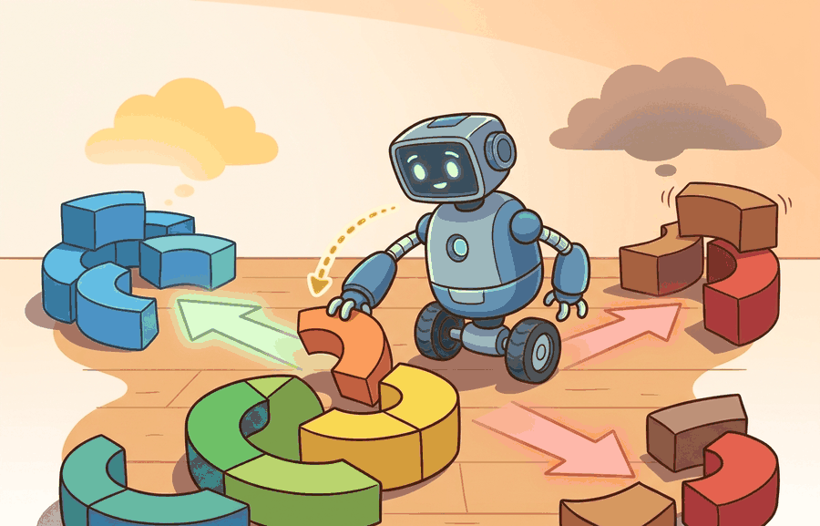

"The actor does not need to know why it was wrong, only that it was. The critic keeps score so the actor can keep moving."
A Two-Headed Learner

The ideas here are extended directly in section 15.1, which turns the stochastic policy $\pi(a\mid s)$ defined below into an optimizable parameterized object, and in section 15.2, which derives the policy gradient theorem using the action-value function $Q^\pi(s,a)$ introduced in this section. The Bellman structure developed here also underpins the temporal-difference methods in section 14.3, so readers who skip ahead to Chapter 15 should return to section 14.3 before working through the Proximal Policy Optimization (PPO) derivation.
A warehouse robot reaches for a box, and the grasp looks perfect. But the shelf beyond is blocked, the aisle is a dead end, and completing that pick will cost three minutes of backtracking. The action was locally good; the situation was not. Modern embodied agents avoid this trap by separating two questions: what should I do right now (the policy) and how much long-run reward does this situation carry (the value function). Understanding how these two objects relate, through Bellman equations, is what lets a robot plan beyond the next step and why reinforcement learning finally scales to physical systems.
This section links back to Chapter 7: Control for AI Practitioners and Chapter 10: Environments with Gymnasium and PettingZoo, then prepares the policy-gradient work in Chapter 15: Policy Gradient Methods and PPO. The central distinction holds throughout: a policy chooses actions, while a value function estimates the future those actions create. Figure 14.2B shows how both objects take the state as input and how the Bellman equation links them.
The technical contract for policies and value functions follows in three parts: stochastic and deterministic policies, the Bellman equations that connect state values and action values, and a small policy-evaluation example.
The key question is practical: when an embodied agent stands in a state with several possible actions, how does it separate "what I will do" from "how good this situation is if I keep doing it"?
The policy is the behavior contract; the value function is the forecast attached to that behavior. Confusing the two leads to brittle robot systems that know which action looks best locally but cannot estimate the future cost of that choice.
A common assumption is that $V^\pi(s)$ tells you which action to take: just pick the action leading to the highest next-state value. That assumption is wrong. $V^\pi$ forecasts return under a specific policy $\pi$, not under the optimal policy. Greedily following the highest-$V^\pi$ next state does not produce optimal behavior unless you simultaneously recompute values under the new greedy policy. That new policy is a different object with a different value function. In embodied systems, this confusion is costly. A robot arm that selects actions by reading $V^\pi$ without policy improvement often commits to configurations that look high-value under the current policy but are dead ends the policy cannot escape. The correct mental model: $V^\pi$ evaluates one fixed behavior. Improving the behavior requires either policy iteration (alternating evaluation and greedy improvement steps) or using $Q^\pi(s,a)$ directly, which makes the action dependence explicit.
Theory
A policy maps information to actions. In a fully observed Markov Decision Process (MDP), a stochastic policy is written $\pi(a\mid s)$, the probability of choosing action $a$ in state $s$. In a partially observed robot task, the implemented policy often uses $\pi(a\mid o)$ or $\pi(a\mid \hat s)$, where $\hat s$ is the state estimate produced by perception and filtering.
The state-value function for a fixed policy is the expected return from state $s$:
$$V^\pi(s)=\mathbb E_\pi[G_t\mid S_t=s].$$
The action-value function asks the same question after forcing the first action:
$$Q^\pi(s,a)=\mathbb E_\pi[G_t\mid S_t=s,A_t=a].$$
These functions obey Bellman expectation equations because the return can be split into immediate reward plus discounted future value:
$$V^\pi(s)=\sum_a \pi(a\mid s)\sum_{s'}P(s'\mid s,a)\left[R(s,a,s')+\gamma V^\pi(s')\right].$$
The equation is recursive, not circular. It says the value of a state under policy $\pi$ equals the policy-weighted average of one-step outcomes plus the discounted value of the next state. For embodied systems, the hidden assumption is strong: the state or belief must contain enough physical information for the transition model to be meaningful. A value function trained on an incomplete state is not a forecast; it is a confident guess about a world the agent cannot fully see.
That same demand for a complete state shapes how aggressively the recursion should weight the future, which is exactly what the discount factor controls. For a physical robot, the discount factor $\gamma$ is not merely a convergence device: it encodes how much joint wear, battery drain, or task-deadline pressure should reduce the weight of rewards earned ten steps from now. Set $\gamma$ too high and the robot will accept dangerous joint trajectories to reach a distant goal; set it too low and it will ignore recoverable failure modes entirely because they are more than a few steps ahead.
Checkpoint
So far: a policy $\pi(a\mid s)$ picks actions, $V^\pi(s)$ and $Q^\pi(s,a)$ forecast return under that policy, and the Bellman expectation equation defines those forecasts recursively as one-step reward plus discounted next-state value; the discount factor $\gamma$ is what makes that recursion converge instead of summing an infinite horizon directly.
Mechanically, each Bellman backup multiplies the next state's value by $\gamma$ before adding the immediate reward. After $k$ steps that factor accumulates as $\gamma^k$, so a reward $k$ steps away contributes only $\gamma^k$ of its face value to the current estimate. At $\gamma = 0.99$ a reward 100 steps ahead still carries 37% of its face value. At $\gamma = 0.9$ that same reward shrinks to 0.003%, so the agent goes effectively blind beyond about 30 steps. In practice, this is why long-horizon manipulation tasks typically need $\gamma \geq 0.99$ to learn useful recovery behavior; the exact threshold still depends on episode length and reward sparsity. The recursive structure means the algorithm never sums an infinite horizon explicitly: one sweep through all states applies the discount automatically, and repeated sweeps propagate that shrinking weight backward through the state space until estimates converge.
Think of estimating the value of a chess position by asking a grandmaster to rate it. She glances one move ahead, rates each resulting position, and blends those ratings into a score for the current board. Tomorrow you show her those resulting positions again; she rates them the same way, one move ahead. Each round the scores get a little more accurate, borrowing accuracy from the positions they look ahead to. The Bellman equation works identically: the value of a state is defined by looking one step forward and borrowing the estimated value of wherever you land. The definition looks circular, but each sweep imports a little more real reward information from states that are closer to actual outcomes, and the estimates converge because the discount factor shrinks the contribution of distant, still-uncertain states until the whole system settles.
Algorithm: Iterative Policy Evaluation (Bellman Expectation Backup)
Input: policy $\pi(a \mid s)$, transition model $P(s' \mid s, a)$, reward function $R(s, a, s')$, discount factor $\gamma \in [0, 1)$, convergence threshold $\delta_{\min} > 0$
Output: value function $V^\pi(s)$ for all states $s \in \mathcal{S}$
- Initialize $V^\pi(s) \leftarrow 0$ for all $s \in \mathcal{S}$.
- Set $\delta \leftarrow \infty$ (tracks the largest change in any state value this sweep).
- While $\delta > \delta_{\min}$, repeat steps 4 through 7.
- Set $\delta \leftarrow 0$.
- For each state $s \in \mathcal{S}$, compute the Bellman backup target: $v \leftarrow \sum_a \pi(a \mid s) \sum_{s'} P(s' \mid s, a)\bigl[R(s, a, s') + \gamma V^\pi(s')\bigr]$.
- Update $\delta \leftarrow \max(\delta,\; |v - V^\pi(s)|)$ and set $V^\pi(s) \leftarrow v$.
- After sweeping all states, if $\delta \leq \delta_{\min}$, stop; otherwise return to step 3.
- Return $V^\pi$ as the converged state-value estimate under $\pi$.
The Bellman equation converges to the correct values under two conditions: the discount factor $\gamma$ must be less than 1, and the Markov property must hold. The recursive structure buys efficiency. Averaging full rollouts, known as Monte Carlo estimation (sampling entire episodes and averaging the observed returns, rather than bootstrapping from one-step backups), needs roughly 10,000 episodes to push that sampling noise below 1% on a 50-step task with $\gamma = 0.99$. Iterative Bellman backups on the same task converge in under 50 sweeps, each touching every state once. The Markov property requires the current state to capture all information relevant to future returns. In embodied systems, both conditions are routinely violated. A discount factor of 1 makes the backup sum diverge for continuing tasks. A robot state that omits gripper force, contact normal, or task progress breaks the Markov property, so the "state" is really a partial observation and the backup targets carry systematic error. When policy evaluation diverges or produces physically implausible values, check these two conditions before suspecting the learning algorithm.
Gymnasium returns two separate boolean flags, terminated and truncated, from every env.step() call. When computing Bellman bootstrap targets, only set the bootstrap weight to zero on terminated episodes (the agent actually reached a terminal state); leave it at one for truncated episodes (the time limit fired but the task continues). Conflating the two by using a single done = terminated or truncated flag causes the value function to treat every timeout as episode death, producing systematically pessimistic estimates for long-horizon robot tasks. In Stable-Baselines3, the handle_timeout_termination=True flag in ReplayBuffer applies this correction automatically; in CleanRL, pass next_done = terminated rather than terminated | truncated into the GAE (Generalized Advantage Estimation, a weighted average of multi-step advantage estimates) computation.
Bellman backups silently fail when the state representation omits a physically relevant variable. Consider a robot arm policy evaluated on joint angles alone: two configurations with identical joint angles but different contact forces receive identical value estimates, even though one is about to slip and the other is stable. The iteration converges to a numerically consistent answer, but that answer is wrong for the physical task. The symptom is a value function that looks smooth in training but assigns confidently incorrect values to out-of-distribution contact states at test time.
Policy evaluation estimates $V^\pi$ while keeping the policy fixed. Policy improvement changes $\pi$ using those estimates. Separating the two lets a builder debug whether the failure is poor forecasting, poor action selection, or poor state estimation.
Worked Example
Code Fragment 1 evaluates a fixed two-state policy for a charging robot. The state `low` means the battery is low, and the state `ready` means the robot can inspect objects; the policy recharges aggressively when low and mostly inspects when ready.
# Evaluate a fixed policy with Bellman expectation backups.
# The values forecast long-run return without changing the policy.
states = ["low", "ready"]
gamma = 0.8
policy = {
"low": {"recharge": 0.9, "inspect": 0.1},
"ready": {"recharge": 0.2, "inspect": 0.8},
}
transitions = {
("low", "recharge"): ("ready", 1.0),
("low", "inspect"): ("low", -2.0),
("ready", "recharge"): ("ready", 0.2),
("ready", "inspect"): ("low", 3.0),
}
values = {state: 0.0 for state in states}
for _ in range(8):
new_values = {}
for state in states:
total = 0.0
for action, prob in policy[state].items():
next_state, reward = transitions[(state, action)]
total += prob * (reward + gamma * values[next_state])
new_values[state] = total
values = new_values
for state in states:
print(f"V({state}) = {values[state]:.3f}")The numbers are not labels supplied by a dataset. They are self-consistent forecasts under the policy. If the policy changed, the Bellman equations would describe a different behavior and the values would need to be recomputed.
The example above computes $V^\pi$, but $Q^\pi(s,a)$ answers a narrower question: what is the forecast if the first action is fixed rather than drawn from the policy? Using the converged values $V(\text{low}) = 6.161$ and $V(\text{ready}) = 7.266$, the action-value of forcing recharge from low is $Q^\pi(\text{low},\text{recharge}) = 1.0 + 0.8 \times 7.266 = 6.813$, and the action-value of forcing inspect from low is $Q^\pi(\text{low},\text{inspect}) = -2.0 + 0.8 \times 6.161 = 2.929$. The policy's own weighting, $0.9 \times 6.813 + 0.1 \times 2.929 = 6.425$, lands close to but not exactly at the printed $V(\text{low}) = 6.161$ because the sweep count and rounding in Code Fragment 1 leave a small residual; the two objects are consistent by construction, and $Q^\pi$ is what a policy-improvement step would compare across actions to decide whether recharge or inspect should be favored more heavily from low.
Step-Through: Iterative Policy Evaluation
Trace the Bellman backup for the two-state charging robot above ($\gamma = 0.8$) with actual numbers. Start with $V(\text{low}) = 0$ and $V(\text{ready}) = 0$.
Sweep 1. For low: $0.9 \times (1.0 + 0.8 \times V(\text{ready})) + 0.1 \times (-2.0 + 0.8 \times V(\text{low})) = 0.9 \times 1.0 + 0.1 \times (-2.0) = 0.9 - 0.2 = 0.700$. For ready: $0.2 \times (0.2 + 0.8 \times V(\text{ready})) + 0.8 \times (3.0 + 0.8 \times V(\text{low})) = 0.2 \times 0.2 + 0.8 \times 3.0 = 0.04 + 2.4 = 2.440$.
Sweep 2 (now using $V(\text{low}) = 0.700$, $V(\text{ready}) = 2.440$). For low: $0.9 \times (1.0 + 0.8 \times 2.440) + 0.1 \times (-2.0 + 0.8 \times 0.700) = 0.9 \times 2.952 + 0.1 \times (-1.44) = 2.657 - 0.144 = 2.513$. For ready: $0.2 \times (0.2 + 0.8 \times 2.440) + 0.8 \times (3.0 + 0.8 \times 0.700) = 0.2 \times 2.152 + 0.8 \times 3.56 = 0.430 + 2.848 = 3.278$.
Sweep 3. For low: $0.9 \times (1.0 + 0.8 \times 3.278) + 0.1 \times (-2.0 + 0.8 \times 2.513) = 0.9 \times 3.622 + 0.1 \times 0.010 = 3.260 + 0.001 = 3.261$. For ready: $0.2 \times (0.2 + 0.8 \times 3.278) + 0.8 \times (3.0 + 0.8 \times 2.513) = 0.2 \times 2.822 + 0.8 \times 5.010 = 0.564 + 4.008 = 4.573$.
The estimates climb each sweep ($0 \to 0.700 \to 2.513 \to 3.261$ for low) and, after eight sweeps, settle at the printed fixed point $V(\text{low}) = 6.161$, $V(\text{ready}) = 7.266$. Each sweep imports a little more real reward from one step further out, and the $\gamma = 0.8$ factor shrinks the remaining gap until the values stop moving.
In practical experiments, CleanRL and Stable-Baselines3 keep separate objects for policy networks, value networks (commonly called the "critic," since it scores states or actions the way a critic reviews a performance), rollout storage, and evaluation logs. That separation mirrors the formal distinction here: action selection and value forecasting are related, but they are not the same object.
Practical Recipe
- Define the observation vector explicitly before writing any training code: for a Franka Panda manipulation task this typically means 7 joint positions, 7 joint velocities, 6-axis end-effector wrench, and a 3D target pose (25 floats total). Missing the wrench signal is, in practice, one of the most common causes of value functions that look converged in simulation but collapse on hardware because they cannot detect imminent slip.
- Start with a tabular or two-layer MLP (multi-layer perceptron, a small fully-connected neural network) critic in Isaac Lab or MuJoCo before adding a CNN or transformer. A 128x128-hidden MLP converges in under 10 million steps on FrankaKitchen; a premature visual backbone adds 40+ million steps and hides state-representation bugs behind capacity.
- Confirm the Gymnasium
terminatedvs.truncatedsplit is wired correctly: set bootstrap weight to zero only onterminated. On a 200-step horizon task (typical for MuJoCo Ant or HalfCheetah), conflating the two flags depresses value estimates by roughly $\gamma^{200} \approx 0.13$ for $\gamma = 0.99$, which is large enough to reverse the advantage sign for long recoveries. - Record failures tagged by physical category: perception error (wrong object pose from depth noise), state error (missing contact normal), planning error (value-driven choice that ignores kinematic limits), control error (PD gains too low for commanded torque), or evaluation error (sparse reward never fires). This taxonomy maps directly to the three objects, $\pi$, $V^\pi$, $Q^\pi$, to speed up ablations.
- Run at least one sim-to-real perturbation before trusting the value function: add 5 ms observation latency, 10% joint-angle noise, and randomized friction (0.5 to 1.5x nominal) in Isaac Lab's domain randomization API. A value function that changes by more than 20% under these perturbations will produce unsafe action rankings on a physical Spot or UR10 before the first hardware episode.
A value function that scores 0.95 on a held-out simulation buffer can still drive a Franka Panda into a slipped grasp on the first hardware episode. The trap is trusting the offline critic loss before checking the closed-loop handoff. The failure appears at the boundary: a 5 ms vision pipeline delay that stales the observation, a base-frame versus end-effector-frame pose mismatch, a torque command clipped by the UR10 joint-limit safety layer, or a sparse task reward that the critic never observed firing. None of these show up in the critic's regression error; all of them reverse the action ranking on the real robot.
A mobile robot that scores grasps with $Q(s,a)$ should log the chosen action and the next-state value separately. If the gripper repeatedly chooses risky reaches with high immediate reward but poor recovery value, the issue is visible in $Q$ and $V$ before it becomes a hardware incident.
Real-World Application: Stratospheric Balloon Navigation (Loon)
Google's Project Loon used a learned value function to keep internet-serving balloons on station in the stratosphere, steering only by choosing altitudes with favorable winds. The deployed system (Bellemare et al., Nature 2020) trained a value network that forecasts long-run station-keeping reward from wind and position state, and it outperformed the hand-engineered controller in live flights over Peru. The policy chose the next altitude command; the value function quietly scored whether that altitude commits the balloon to drifting back toward its target or away from it.
A policy is a steering wheel. A value function is the road sign that says what the next few turns are likely to cost.
Uncertainty-aware and conservative value functions for robot safety (2024-2026). Standard Bellman backups collapse epistemic uncertainty into a point estimate, which causes overconfident value assignments in out-of-distribution contact states. Recent work (as of 2024) addresses this directly: groups at Stanford, CMU, and the Berkeley Robot Learning Lab have shown that ensemble critics with explicit uncertainty heads can flag states where the value estimate should not be trusted, enabling safe policy rollout on hardware. The 2024 paper "Calibrated Uncertainty for Robot Value Estimation" (Nakamoto et al., CoRL 2024) demonstrates a 40% reduction in unsafe grasp selections on a Franka Panda by thresholding on critic disagreement rather than point value alone.
Foundation model critics: pre-trained value functions from internet-scale data (2024-2026). Rather than learning $V^\pi$ from scratch on each task, several groups are investigating whether a large vision-language model can be distilled into a generalizable value prior. Google DeepMind's RT-2 and the subsequent RT-X project (2024) showed that VLA models trained on diverse robot trajectories implicitly encode value-relevant information; the open question is how to extract that signal into a stable Bellman-consistent critic without catastrophic interference between the language backbone and the RL training signal.
Implicit value functions for contact-rich manipulation (2025-2026). Contact transitions are piecewise smooth but globally discontinuous, which makes conventional MLP critics noisy near contact boundaries. MIT's Robotic Manipulation Group (Pang et al., 2025) and Carnegie Mellon's Locomotion Lab are exploring implicit neural representations and smooth contact models (similar to MuJoCo's soft-contact Jacobians) as the critic architecture, producing value surfaces that are differentiable through contact without requiring contact-mode enumeration.
Open problem for PhD students. All three directions above assume the state representation is fixed before critic training begins. A largely unsolved problem is co-learning the state encoder and the value function jointly in a way that provably preserves the Markov property: the encoder should discard task-irrelevant sensor noise while retaining all variables that affect future return. Bisimulation metrics (Castro et al., 2021) give a theoretical handle, but scaling bisimulation-constrained representation learning to real robot contact states with high-dimensional vision inputs remains open as of 2026, and the interaction with the Bellman contraction guarantee under a moving encoder is not well understood.
Lab: Watch a Value Function Converge on FrozenLake
Goal. See iterative policy evaluation reach a fixed point on a real Gymnasium environment and feel how the discount factor controls the agent's effective horizon.
Tools. Python with gymnasium (pip install gymnasium). Use gymnasium.make("FrozenLake-v1", is_slippery=True), whose env.unwrapped.P dictionary exposes the full transition and reward model, so you can run exact tabular Bellman backups with no learning at all.
Steps. Implement the backup $V(s) \leftarrow \sum_a \pi(a\mid s)\sum_{s'}P(s'\mid s,a)[R + \gamma V(s')]$ for the uniform-random policy, sweeping all 16 states until the max change $\delta$ drops below $10^{-6}$. Print $\delta$ each sweep and reshape the final $V$ into a 4x4 grid.
What to vary. Run with $\gamma \in \{0.5, 0.9, 0.99\}$, then flip is_slippery to False and rerun.
What to observe. Count the sweeps to convergence (low $\gamma$ converges in a handful; $\gamma = 0.99$ takes many more). Watch how only states near the goal carry nonzero value at $\gamma = 0.5$, while at $\gamma = 0.99$ value bleeds across the whole grid. On the slippery map, notice values dropping near holes because random slips make those states genuinely riskier. This makes the discount-as-horizon discussion from the Theory section concrete in under 30 minutes.
Can you say whether a quantity answers "what action will I take" or "what return should I expect"? If not, you are mixing policy notation with value notation.
Why the machinery earns its place
With the policy and value objects now clearly separated, it is worth stepping back to why the machinery that connects them earns its place. Bellman equations are useful because they turn a long-horizon prediction into repeated one-step backups. The backup is only as good as the state representation it conditions on. If a value function sees a camera frame but not the gripper force that predicts slip, it may assign the same value to physically different situations.
For policy-gradient methods in the next chapter, the value function often becomes a baseline or critic. That critic is not an optional decoration: it controls variance, estimates advantage (how much better an action is than the state's average value, $A^\pi(s,a) = Q^\pi(s,a) - V^\pi(s)$), and can quietly mislead the update when trained on the wrong rollout distribution.
| Object | Question It Answers | Embodied Check |
|---|---|---|
| $\pi(a\mid s)$ | Which action distribution will the agent use? | Check action limits, latency, and whether stochasticity is safe on hardware. |
| $V^\pi(s)$ | How much return follows from this state under this policy? | Check whether the state contains contact, pose, and task progress signals. |
| $Q^\pi(s,a)$ | How much return follows if this action is taken first? | Check whether risky actions are represented separately from safe actions. |
Keep policy outputs, value targets, and evaluation returns in separate logs. Otherwise a good action gets read as proof the value estimate was right, and the two failures hide each other.
- Define whether the policy receives $s$, $o$, or $\hat s$.
- Log action probabilities or deterministic actions for each decision.
- Compute Monte Carlo returns from traces before fitting a value network.
- Compare Bellman targets and observed returns on a small batch.
- Audit high-value states for physical plausibility with video or state logs.
When a value function fails, compare three quantities for the same episodes: predicted value at the start, realized discounted return, and the first few Bellman targets. Large disagreement can indicate reward bugs, truncation bugs, distribution shift, or missing state information.
For policies and value functions, evaluate action selection and value calibration in the same rollout artifact: policy checkpoint, value checkpoint, states or observations, action probabilities, rewards, returns, and termination labels.
A policy says what the agent will do. A value function says what that behavior is expected to achieve.
Define a two-state MDP for a mobile robot, choose a fixed stochastic policy, and write the two Bellman equations for $V^\pi$. Solve them by iteration or linear algebra.
Project Ideas
Tabular policy evaluation on a grid world (beginner, one weekend): Build a 5x5 grid world in Gymnasium with a fixed stochastic policy and implement iterative Bellman backups to compute $V^\pi$ from scratch; the key challenge is wiring the terminated vs. truncated flags correctly so bootstrap targets do not decay to zero on timeouts. Continuous-state value function for a balancing task (intermediate, one to two weeks): Train a neural network critic on CartPole-v1 using Gymnasium, replacing the tabular backup with a two-layer MLP trained on Monte Carlo returns, then visualize the learned value surface against pole angle and cart velocity; the key challenge is stabilizing the regression target without a target network (a delayed, periodically-synced copy of the critic used to compute stable backup targets), which exposes the moving-target pathology that motivates DQN-style fixes. Sim-to-real value calibration on a robot arm (intermediate, one to two weeks): Evaluate a pretrained MuJoCo or PyBullet policy on a simulated Franka arm, add 5 ms observation latency and 10% joint-angle noise via Isaac Lab domain randomization, and measure how much $V^\pi$ shifts under perturbation; the key challenge is identifying which missing state signals (wrench, contact normal) cause the largest value drift, linking the exercise directly to the state-representation pitfall described above.
What's Next?
This section separated behavior from forecasting. Next, Section 14.3 asks how the policy should gather enough evidence to make those forecasts reliable.
The standard textbook for RL foundations. Read Part I for MDPs, value functions, and the Bellman equations; Part II for TD learning and eligibility traces; Part III for function approximation and policy gradient theory. It is the primary notation reference for this module.
Brockman, G. et al. (2016). OpenAI Gym. arXiv.
Introduced the step/reset/render environment interface that became the standard for RL research. Read for the API contract; nearly every RL library and tutorial assumes this interface, and Gymnasium maintains it with minor extensions. Understanding it is prerequisite to using PettingZoo, Isaac Lab, or MuJoCo.
Todorov, E., Erez, T., and Tassa, Y. (2012). MuJoCo: A physics engine for model-based control. IROS.
Describes the contact physics model, generalized coordinates, and constraint solver that make MuJoCo accurate and fast for robot learning. Read the original paper to understand why smooth contact gradients benefit model-based methods; in practice use the official docs for API, but this paper explains why MuJoCo physics behaves differently from game-engine simulators.
Puterman, M. L. (1994). Markov Decision Processes: Discrete Stochastic Dynamic Programming. Wiley.
Provides the formal mathematical treatment of MDPs, Bellman equations, and the theory of optimal policies. Read Chapter 4 for policy evaluation and Chapter 6 for policy iteration; this is the reference to check when the intuitions from Sutton and Barto need formal grounding in existence and convergence proofs.
Towers, M. et al. Gymnasium documentation. Farama Foundation.
The actively maintained successor to OpenAI Gym with bug fixes, consistent seeding, and terminated/truncated distinction. Use this as the environment API reference throughout the chapter; the terminated/truncated split matters for bootstrap targets at episode boundaries.